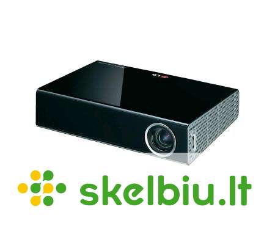

SKYTECH.LT - kompiuteriai, televizoriai, namų elektronika
 Forumas Informacija Apie mus Rekvizitai Naudojimosi taisyklės Privatumo apsauga Atsiskaitymo būdai Administravimo mokestis Prekių pristatymas Garantinis aptarnavimas Prekių grąžinimas Prašymų nagrinėjimas Kodėl verta registruotis Paslaugos Kompiuterių remontas Akumuliatorių atnaujinimas Verslo klientams Parduotuvių tinklas Vilnius Kaunas Klaipėda Plungė Alytus E-parduotuvė Buhalterija Sveiki, prisijunkite arba užsiregistruokite! * Pastaba: tikslesnei paieškai naudokite prekių gamintojų kodus. Išplėstinė paieška › 8 700 30730 Konsultuojame I-V 9 00 - 18 00 ,VI 10 00 - 14 00 Kompiuteriai, Komponentai Nešiojami kompiuteriai / 3716 Nešiojami kompiuteriai / 1350 Krepšiai, kuprinės, dėklai / 628 Maitinimo šaltiniai / 317 Jungčių stotelės (Docking station) / 63 Priedai / 147 Atsarginės dalys / 400 Garantijos išplėtimas / 811 Planšetiniai kompiuteriai / 579 Planšetiniai kompiuteriai (Tablet) / 205 Apple iPad planšetiniai kompiuteriai / 113 Krepšiai, dėklai / 159 Planšetinių kompiuterių priedai / 102 Elektroninės skaityklės / 30 Elektroninės skaityklės / 20 Dėklai / 10 Staliniai kompiuteriai / 3357 SKY kompiuterių komplektai / 24 AiO kompiuteriai (įmontuoti monitoriuje) / 99 Firminiai kompiuteriai (Branded PC) / 2979 Darbinės stotys / 5 Plono kliento sistemos (terminalai) / 6 Kompiuterių platformos / 61 Kompiuterių stovai, laikikliai / 34 Ekrano privatumo filtrai / 94 Priedai / 55 Serveriai / 3599 Serveriai / 77 Serverių NMŠ (Rack/Tower UPS) / 338 Duomenų saugojimo sistemos / 103 Serverių komponentai / 373 Serverių spintos ir priedai / 780 Serverių programinė įranga / 21 Paslaugos ir garantijos praplėtimas / 1173 Serverių priedai / 734 Kompiuterių komponentai / 5213 Kompiuterių platformos (Barebone) / 63 Procesoriai (CPU) / 97 Pagrindinės plokštės ir priedai / 437 Aušintuvai / 540 Operatyvinė atmintis (RAM) / 863 HDD, SSD ir priedai / 1501 Optiniai įrenginiai / 57 Vaizdo plokštės ir priedai / 621 Garso Plokštės / 29 Įvesties/išvesties išplėtimo plokštės / 28 Korpusai ir priedai / 628 Maitinimo blokai / 349 Išorinės duomenų laikmenos / 1894 Diskų korpusai (HDD cases) / 231 Išoriniai standieji diskai / 375 Tinklo saugyklos, NAS / 59 Vidinių diskų stotelės / 17 Išorinių diskų priedai, dėklai / 4 Rezervinio kopijavimo įrenginiai / 7 USB flash laikmenos / 606 Flash atmintinė (kortelės) / 414 Flash kortelių skaitytuvai, priedai / 93 Media laikmenos (CD, DVD ir kt.) / 88 Kompiuterių priedai ir aksesuarai / 720 Akiniai darbui kompiuteriu / 1 Apsauga nuo vagysčių (užraktai, troseliai) / 17 Smart card (ID) skaitytuvai / 10 TV tuneriai, vaizdo apdorojimo įrenginiai / 42 Vaizdo ir garso konverteriai (Digital/Analog) / 4 Infrared ir Bluetooth ryšio adapteriai / 14 USB HUB, šakotuvai / 212 USB šviestuvai ir žaislai / 5 KVM įrenginiai ir priedai / 175 El. maitinimo Filtrai, Šakotuvai / 147 Surinkimo ir testavimo įrankiai / 10 Valikliai, Servetėlės / 83 Kabeliai, adapteriai ir priedai / 5399 Apple įrenginių kabeliai ir adapteriai / 18 Apple Lightning kabeliai ir adapteriai / 132 HDMI, DisplayPort, DVI kabeliai ir adapteriai / 906 MHL, SlimPort kabeliai ir adapteriai / 7 VGA kabeliai, adapteriai, konverteriai ir jungtys / 193 Vaizdo ir garso kabeliai, perėjimai, jungčių keitikliai / 171 Vaizdo ir garso konverteriai (Digital/Analog) / 4 Vaizdo ir garso šakotuvai, perjungėjai / 102 Vaizdo ir garso perdavimo įranga / 13 Optiniai garso kabeliai ir adapteriai / 25 USB kabeliai ir adapteriai / 986 USB į HDMI DVI DP VGA / 165 Thunderbolt kabeliai ir adapteriai / 13 Firewire kabeliai ir adapteriai / 3 COM, LPT, PS2 kabeliai ir adapteriai / 101 SATA, SATA power, SAS, IDE kabeliai / 171 Komp. vidiniai maitinimo kabeliai, adapteriai / 45 HDD Diskų pajungimo adapteriai ir priedai / 101 El. maitinimo adapteriai, kabeliai, ilgikliai / 102 Tinklo ir telefono kabeliai (UTP,Fiber) / 2039 Bendraašiai (Coaxial) kabeliai antenoms ir priedai / 11 Kabelių tvarkymo priedai, dirželiai / 91 Programinė įranga / 431 Antivirusinės, apsaugos programos / 262 Atsarginio kopijavimo programos / 18 Biuro ir dokumentų tvarkymo programos / 64 CD, DVD, HD, Blu-Ray įrašymo programos / 2 Dizaino ir grafikos programos / 9 Mokomosios programos / 6 Operacinės sistemos / 20 Programinės įrangos prenumeratos / 19 Serverių programinė įranga / 21 Video ir muzikos montavimo programos / 5 Žodynai ir rašybos tikrinimas / 1 Kitos programos / 4 Periferija, Biuro įranga Monitoriai / 1394 Dideli LCD ekranai (komerciniai) / 227 Monitorių priedai (laikikliai, filtrai ir kt.) / 485 Monitorių laikikliai, stovai / 309 Privatumo filtrai / 94 Kiti monitorių priedai / 82 Projektoriai / 684 Projektoriai / 331 Projektorių ekranai ir stovai / 214 Projektorių lempos, optika ir filtrai / 11 Projektorių tvirtinimo įranga / 103 Kiti projektorių priedai / 24 Garantijos išplėtimas / 1 Akiniai darbui kompiuteriu / 1 Klaviatūros / 762 Kompiuterių klaviatūros / 232 Žaidėjų klaviatūros / 297 Komplektai (klaviatūra+pelė) / 154 Skaičių klaviatūros / 18 Kitos, priedai / 61 Pelės ir kiti įvesties įrenginiai / 1572 Pelės ir kt. manipuliatoriai / 615 Žaidėjų pelės / 398 Komplektai (pelė+klaviatūra) / 154 Jutikliniai paviršiai (Touchpad) / 3 Kilimėliai / 376 Priedai / 26 Ausinės / 2035 Be lankelio (In-Ear, Earphones) / 840 Su lankeliu (Headphones, Headset) / 1126 Mob. telefonams, laisvų rankų įranga / 16 Skaitmeniniai stiprintuvai / 2 Ausinių priedai / 51 Kompiuterinės kolonėlės / 253 Mikrofonai / 150 WEB kameros / 60 Interaktyvūs sprendimai / 17 Interaktyvios lentos / 14 Priedai / 3 Šnipinėjimo įranga / 2 Prezentacijų įranga / 52 Spausdintuvai / 300 Spausdintuvai / 161 Spausdintuvų priedai / 139 Multifunkciniai spausdinimo įrenginiai / 259 Multifunkciniai įrenginiai / 203 Priedai / 56 3D Spausdintuvai / 94 3D Spausdintuvai / 17 3D Spausdintuvų gija / 73 Priedai / 4 Braižytuvai (Plotters) / 29 Braižytuvai (Plotters) / 29 Spausdinimo serveriai ir komutatoriai / 5 Skeneriai / 42 Dokumentų skeneriai / 25 Mobilūs skeneriai / 7 Planšetiniai skeneriai / 8 Skaidrių, fotojuostų ir nuotraukų skeneriai / 1 Priedai / 1 Barkodų skaitytuvai / 12 Grafinės planšetės / 56 Planšetės / 33 Planšečių priedai / 23 Pinigų tikrinimo, saugojimo ir skaičiavimo įranga / 10 Kanceliarinės prekės / 328 Dokumentų naikikliai ir jų priedai / 148 Dokumentų įrišimas, segtuvai / 7 Laminavimo įranga / 66 Dokumentų kameros / 8 Popieriaus pjaustyklės / 6 Skaičiuotuvai / 51 Kitos smulkmenos / 42 Eksploatacinės medžiagos / 2547 Rašalinių spausdintuvų eksploatacinės medžiagos / 907 Lazerinių spausdintuvų eksploatacinės medžiagos / 1218 Kopijuoklių eksploatacinės medžiagos / 43 Braižytuvų eksploatacinės medžiagos / 128 Faksų ekpl. medžiagos / 2 Popierius, plevelės, lipdukai / 235 Sublimacinių sp. ekspl. medžiagos / 2 Kitos ekspl. medžiagos / 12 Maitinimo Filtrai / 147 UPS (NMŠ) / 945 Nepertr. Maitinimo Šaltiniai (UPS) / 389 Serverių NMŠ (Rack/Tower UPS) / 338 VRLA tipo baterijos (vidinės) / 135 NMŠ (UPS) išorinės baterijos, jų priedai / 12 UPS-ų priedai / 71 Namų elektronika Televizoriai / 923 Televizoriai / 377 Apple TV / 8 Nuotolinio valdymo pultai / 32 Skaitmeninės TV ir kiti priedėliai / 10 TV antenos, kabeliai ir priedai / 59 TV laikikliai, stovai / 406 Kiti priedai / 31 Video ir audio aparatūra / 300 AV imtuvai ir stiprintuvai / 10 AV įrangos laikikliai, stovai / 7 Bluray, DVD ir CD grotuvai / 8 Garso kolonėlės / 48 Media grotuvai / 2 Magnetolos / 32 Muzikiniai centrai / 29 Namų kino sistemos / 51 Plokštelių grotuvai / 20 Radijo imtuvai, žadintuvai / 71 Priedai / 9 Vaizdo ir garso perdavimo įranga / 13 Kolonėlės / 805 Kompiuterinės kolonėlės / 253 Nešiojamos kolonėlės / 345 Namų kolonėlės / 48 Namų kino sistemos / 51 Protingos (SMART) kolonėlės / 26 Vakarėlių kolonėlės / 70 Kolonėlių priedai / 12 Protingam namui / 306 Apšvietimas / 57 Aktyvatoriai / 15 Jutikliai, davikliai / 49 Išmanus sodas / 66 Kištukiniai lizdai / 26 Komplektai / 2 Praėjimo kontrolė / 25 Sirenos / 3 Stebėjimo kameros / 4 Termostatai / 6 Valdikliai, valdymo panelės / 14 Valdymo pulteliai / 5 Kiti / 34 Saugos sistemos, sprendimai / 892 Apsauginės signalizacijos įranga / 283 IP įranga, priedai / 379 Praėjimo kontrolė, domofonai / 64 Vaizdo stebėjimo įranga / 166 Nešiojami grotuvai / 70 Grotuvai / 70 Diktofonai / 20 Diktofonai / 20 Foto įranga / 3377 Kompaktiniai fotoaparatai (DSC) / 125 Sisteminiai fotoaparatai (mirrorless) / 197 Veidrodiniai fotoaparatai (SLR) / 47 Momentiniai fotoaparatai / 84 Objektyvai ir jų priedai / 548 Blykstės ir apšvietimas / 226 Flash atmintinė (kortelės) / 414 Krepšiai, dėklai ir apsaugos / 226 Stovai, galvutės ir jų priedai / 343 Mikrofonai ir jų priedai / 70 Baterijos, įkrovikliai / 160 Albumai / 170 Rėmeliai / 558 Kiti priedai / 209 Vaizdo įrašymo įranga / 277 Vaizdo kameros / 26 Kūno kameros ir jų priedai / 4 Vaizdo stabilizatoriai ir jų priedai / 74 Sportinės ir veiksmo kameros / 36 Sportinių ir veiksmo kamerų priedai / 114 Baterijos ir įkrovikliai / 19 Priedai / 4 Skaitmeniniai foto rėmeliai / 15 Optika (teleskopai, mikroskopai, žiūronai) / 137 Teleskopai / 15 Mikroskopai / 16 Monokliai / 11 Žiūronai / 95 Laikrodžiai, žadintuvai, termometrai / 13 Elektros įranga, įkrovikliai, baterijos ir kt. / 689 Baterijų testeriai ir kiti priedai / 1 El. tinklo adapteriai - įkrovikliai / 90 El. kištukų adapteriai / 1 Išorinės baterijos (powerbank) / 194 Įkrovikliai baterijoms / 25 Įkraunamos baterijos / 116 Neįkraunamos baterijos / 262 Komunikacinė ir ryšio įranga Mobilieji telefonai / 3695 Mobilieji telefonai / 616 Asmenukių lazdos ir pulteliai (Selfie sticks) / 23 Baterijos / 11 Bevieliai įkrovikliai / 89 Dėklai / 1457 Dėklai sportui / 17 Ekrano apsauga / 409 El. tinklo adapteriai - įkrovikliai / 90 Flash atmintinė (kortelės) / 414 Išorinės baterijos (powerbank) / 194 Laisvų rankų įranga / 16 Nešiojamos kolonėlės / 345 Sveikatos stebėjimo įrenginiai (iHealth) / 1 Kiti telefonų aksesuarai / 13 Išmaniosios apyrankės, žingsniamačiai / 79 Išmanieji laikrodžiai (SmartWatch) / 705 Staliniai GSM telefonai / 1 Fiksuoto ryšio telefonai / 25 Tinklo įranga / 4735 Maršrutizatoriai (Router) / 220 Namų tinklo sistemos / 82 VPN maršrutizatoriai / 6 4G LTE/3G, WiMAX įranga / 63 DSL įranga (modemai, maršrutizatoriai) / 22 Tinklo plokštės, adapteriai / 269 Infrared ir Bluetooth ryšio adapteriai / 14 Komutatoriai (Switch) / 709 Komutatorių (Switch) moduliai / 2 Bevielio ryšio įranga, antenos ir priedai / 394 Sprendimai ir platformos profesionalams / 23 PoE priedai (Power over Ethernet) / 70 Elektros laidais tinklo įranga / 14 Ugniasienės (Firewalls and UTM) / 39 Spausdinimo serveriai ir komutatoriai / 5 Media konverteriai, GBIC, SFP, XFP / 135 Licencijos ir servisas / 311 Tinklo įrankiai / 93 Kištukai ir jungtukai / 155 Tinklo ir elektros instaliacija / 39 Tinklo ir telefono kabeliai (UTP, FTP, Fiber) / 2039 Kita tinklo įranga ir priedai / 31 VoIP telefonija / 119 VoIP telefonai / 84 VoIP telefonų priedai / 5 VoIP įranga / 30 GPS įranga / 143 GPS navigacinė įranga / 68 GPS turizmui / 16 GPS sportui / 12 GPS imtuvai / 14 GPS žemėlapiai / 1 GPS priedai / 32 Žuvų ieškikliai (echolotai) ir jų priedai / 21 Racijos / 5 Vaizdo ir garso perdavimo įranga / 13 Apsaugos sistemos ir sprendimai / 13 Apsauginės signalizacijos įranga / 12 Praėjimo kontrolės sistemos ir domofonai / 1 Žaidimų įranga, žaidimai Konsolės ir priedai / 143 XBOX konsolės ir priedai / 27 Playstation konsolės ir priedai / 68 Nintendo konsolės ir priedai / 48 Žaidimai / 368 PC/MAC žaidimai / 35 Microsoft XBOX ONE žaidimai / 78 Sony Playstation 3 žaidimai / 1 Sony Playstation 4/5 žaidimai / 148 Nintendo Switch žaidimai / 21 Žaidimų herojų figūrėlės / 85 Žaidėjų (geimerių) klaviatūros / 297 Žaidėjų (geimerių) pelės / 398 Žaidėjų (geimerių) stalai / 29 Žaidėjų (geimerių) kėdės ir jų priedai / 287 Vairamentės (GamePads) / 75 Vairalazdės (Joysticks) / 16 Lenktynėms (vairai, pedalai, perjungimo svirtys) / 61 Avia simuliatoriai / 11 Counter-Strike: Global Offensive aksesuarai / 3 Bepiločiai orlaiviai (dronai) ir jų priedai / 91 Virtualios realybės akiniai / 44 Kiti žaidėjų priedai / 32 Buitinė technika Džiovyklės / 30 Garų rinktuvai (gartraukiai) / 247 Indaplovės / 64 Kaitlentės / 189 Orkaitės / 111 Skalbimo mašinos / 132 Šaldytuvai ir šaldikliai / 309 Viryklės / 56 Maisto atliekų smulkintuvai / 14 Mikrobangų krosnelės / 91 Multifunkciniai puodai / 6 Valymo įranga / 443 Belaidžiai dulkių siurbliai (šluotos) / 71 Dulkių siurbliai-robotai / 37 Dulkių siurbliai / 147 Gariniai įrenginiai / 17 Langų valymo įranga / 8 Aukšto slėgio plovyklos / 6 Kita įranga / 3 Priedai / 154 Lygintuvai ir lyginimo lentos / 103 Siuvimo mašinos / 36 Kavos ir arbatos mėgėjams / 135 Kavos aparatai / 92 Kavamalės / 17 Kava / 11 Kavos aparatų priedai / 8 Pieno plakikliai, šildytuvai / 7 Smulkinimui, pjaustymui / 222 Blenderiai (strypiniai, kokteilinės) / 91 Elektrinės pjaustyklės / 9 Maišytuvai (Mixer) / 23 Mėsmalės / 13 Sulčiaspaudės / 22 Virtuviniai kombainai / 64 Smulki virtuvės technika / 475 Duonos kepimo krosnelės (duonkepės) / 4 Elektrinės krosnelės / 20 Elektriniai, garų puodai / 17 Griliai, kepintuvai / 29 Gruzdintuvai (Fritiūrinės) / 14 Ledų gaminimo aparatai / 7 Maisto džiovintuvai / 18 Sumuštinių keptuvai / 18 Spragėsių gaminimo aparatai / 2 Skrudintuvai / 37 Vaflinės ir kitos keptuvės / 16 Vakuuminiai įrenginiai ir priedai / 46 Virduliai / 200 Virtuvės svarstyklės / 39 Kita virtuvės technika / 8 Virtuvės įrankiai ir indai / 190 Galąstuvai / 3 Keptuvės / 54 Keptuvių ir puodų dangčiai / 10 Peiliai / 9 Puodai / 22 Pipirmalės ir druskinės / 2 Virtuvės ir stalo įrankiai / 6 Termosai, gertuvės / 34 Žirklės / 3 Kiti / 47 Patalpų mikroklimato kontrolė / 265 Meteorologinės stotelės ir termometrai / 16 Oro drėkintuvai ir sausintuvai / 67 Oro valytuvai ir gaivikliai / 46 Oro kondicionieriai / 32 Šildytuvai / 77 Ventiliatoriai / 27 Grožiui ir kūnui / 647 Barzdaskutės ir priedai / 137 Epiliatoriai / 46 Plaukų džiovintuvai / 51 Plaukų tiesintuvai / 16 Plaukų žnyplės ir el. šukos / 36 Plaukų kirpimo mašinėlės ir priedai / 58 Burnos higienai / 207 Masažo įranga / 12 Odos ir nagų priežiūra / 12 Svarstyklės / 72 Mamoms ir kūdikiams / 20 Matuokliai ir komforto įranga / 33 Komforto įranga / 23 Kraujospūdžio ir kiti matuokliai / 9 Batų valymo prietaisai / 1 Buitinių prietaisų priedai / 77 Kitos prekės Asmeninis transportas / 76 Elektriniai paspirtukai / 16 Elektriniai dviračiai / 9 Dviračiai / 2 Paspirtukai / 14 Riedlentės, riedučiai / 2 Riedžiai / 3 Priedai (paspirtukų) / 19 Priedai (kiti) / 11 Automobilių įranga / 867 GPS navigacijos / 115 Vaizdo registratoriai / 110 Alkotesteriai / 14 Automagnetolos ir priedai / 52 Automobilių monitoriai / 7 FM moduliatoriai, CD adapteriai / 31 Garso kolonėlės / 24 Laisvų rankų įranga / 16 Laisvų rankų įranga automobiliams / 7 Maitinimo adapteriai, įkrovikliai, inverteriai / 214 Automobiliniai oro gaivikliai / 105 Įvairių įrenginių laikikliai / 130 Įvairūs automobilių priedai / 42 Aktyviam laisvalaikiui / 391 Kepsninės, BBQ įranga / 26 Keliautojų įranga (Outdoor) / 203 Medžioklės įranga / 1 Sporto įranga ir priedai / 161 Apšvietimas / 298 LED lemputės / 131 LED juostos / 18 LED moduliai / 8 LED maitinimo šaltiniai ir priedai / 14 LED girliandos / 4 LED šviestuvai / 102 Žibintuvėliai ir žibintai / 19 Priedai / 2 Buitinė chemija ir valymo priemonės / 60 Namų kvapai / 39 Valymo priemonės / 14 Pūkų surinkėjai / 7 Dekoratyviniai židiniai, stalo liepsnelės / 9 Gyvūnams / 42 Gertuvės, dubenėliai / 19 Guoliai / 6 Išmanieji prietaisai / 4 Higienos prekės / 6 Kita / 4 Žaislai / 3 Įrankiai / 691 Daugiafunkciniai įrankiai / 10 Elektriniai suktuvai / 121 El. įrankių baterijos, krovikliai / 30 Fenai (techniniai) / 1 Frezos / 14 Matavimo prietaisai / 64 Šlifuokliai / 92 Šviestuvai, žibintai / 1 Obliai / 6 Perforatoriai, gręžtuvai / 83 Pjūklai / 85 Pneumatiniai įrankiai / 28 Rankiniai įrankiai (mechaniniai) / 14 Staklės / 27 Kiti įrankiai / 25 Priedai / 90 Kuprinės, krepšiai ir lagaminai / 36 Laikrodžiai / 9 Plovimo, valymo įranga / 7 Aukšto slėgio plovyklos, priedai / 6 Mechaninės šluotos / 1 e-žaislai ir ne tik / 4134 Dronai (multikopteriai) ir jų priedai / 91 Konstruktoriai ir kaladėlės / 111 Nuotoliniu būdu valdomi žaislai / 87 Elektroninės spynos / 1 Robotai / 8 Žaislai / 3714 Priedai / 122 Santechnika, vonios prietaisai, kita / 181 Grindų valymo įrankiai / 2 Maišytuvai / 120 Plautuvės / 59 Sodui ir daržui / 87 Grėbliai ir šluotos / 7 Hidroforai, siurbliai / 12 Kastuvai ir šakės / 11 Kirviai / 8 Krūmapjovės (Trimeriai) / 1 Peiliai / 1 Pjūklai (rankiniai, grandininiai) / 1 Vėjapjovės (Žoliapjovės) / 14 Žirklės gyvatvorei, sodo / 21 Kita / 11 Pradžia Periferija, Biuro įranga Projektoriai
Projektoriai
Krepšelis yra tuščias Prekių katalogas FiltraiMomentinė paieška
ieškoti ir prekių specifikacijoseRodyti
NAUJI / 6 KeistiGamintojas
ACER / 55 ART / 6 ASUS / 9 AVTEK / 1 BENQ / 43 CANON / 2 CASIO / 1 DELL / 1 EPSON / 51 KODAK / 3 LG / 13 MAXELL / 4 NEC / 16 OPTOMA / 84 OVERMAX / 3 PHILIPS / 5 ŠILELIS / 1 SONY / 6 VIEWSONIC / 22 XIAOMI / 5 KeistiSkiriamoji geba
UHD 4K (3840X2160) / 25 WUXGA (1920X1200) / 51 FULL HD (1920X1080) / 80 HD READY (1366X720|1366X768) / 2 SWXGA (1280X800/1280X720) / 79 XGA (1024X768) / 34 SVGA (800X600) / 16 WVGA (854X480) / 5 KITI / 13 KeistiKaina
88.49 € 6508.00 € Keisti Sužinok, kodėl verta rinktis Hama produktus Grupuoti Gamintojas Negrupuoti Skiriamoji geba Rūšiuoti Kaina 1-100 Pavadinimas A-Z Pavadinimas Z-A Kaina 100-1 Rodyti Visas prekes Sandėlyje+Atvykstančias Tik sandėlyje Paveikslėlis Pavadinimas Kiekis e-Kaina ACER MODELIS: MR.JQC11.001ACER Projector C200 LED WVGA 200Lm 1.000/1 2000:1 HDMI MHL Audio-out(P) 196.99€
MODELIS: MR.JR011.001
ACER Projector C202i LED 854x480 WVGA 300lm 5.000:1 HDMI USB Wifi (P) 5+ 235.19€
MODELIS: MR.JSH11.001
Acer P1155 3D DLP Projector SVGA/4000/20000/HDMI/2.4 2 343.89€
MODELIS: MR.JR811.00M
PROJECTOR BS-112P 4000 LUMENS/MR.JR811.00M ACER 353.29€
MODELIS: MR.JPK11.001
PROJECTOR P1150 3600 LUMENS/MR.JPK11.001 ACER 354.49€
MODELIS: MR.JSB11.001
ACER X1223HP 3D DLP XGA/4000/20000/HDMI/2.25kg 365.99€
MODELIS: MR.JR811.001
ACER X1226AH 3D DLP XGA/4000/20000/HDMI/2.7kg 365.99€
MODELIS: MR.JS611.001
ACER X1227i 3D DLP XGA/4000/20000/HDMI/WiFi/2.7kg 387.99€
MODELIS: MR.JR711.00Z
ACER X118HP DLP 3D SVGA 4000 lm 20000/1 HDMI Audio Euro Power EMEA (P) 5+ 396.39€
MODELIS: MR.JSJ11.001
ACER P1255 3D DLP XGA/4000lm/20000:1/HDMI/Bag/2.25kg 2 403.00€
MODELIS: MR.JSD11.001
Acer H5385BDI 3D DLP Projector 720p/4000Lm, 20000/1 1 415.00€
MODELIS: MR.JR911.00Y
PROJECTOR X138WHP 4000 LUMENS/MR.JR911.00Y ACER 5+ 417.00€
MODELIS: MR.JR811.00Y
PROJECTOR X128HP 4000 LUMENS/MR.JR811.00Y ACER 430.00€
MODELIS: MR.JSC11.001
Acer X1323WHP 3D DLP WXGA/4000/20000/HDMI/2.25kg 2 437.00€
MODELIS: MR.JRZ11.001
Acer C Series Projector C250i Full HD (1920x1080), 300 ANSI lumens, Black 5 439.00€
MODELIS: MR.JS511.001
ACER X1327Wi 3D DLP XGA/4000/20000/HDMI/WiFi/2.7kg 448.00€
MODELIS: MR.JR911.001
Acer X1326AWH 3D DLP WXGA/4000/20000/HDMI/2.7kg 460.00€
MODELIS: MR.JSK11.001
Acer P1355W 3D DLP WXGA/4000AL/20000:1/2.25kg 463.00€
MODELIS: MR.JNB11.00M
Acer H6519ABD - 3D, 31 dB(A) ECO 487.00€
MODELIS: MR.JT011.003
Acer X Series Projector X1527H Full HD (1920x1080), 4000 ANSI lumens, White 4 490.00€
MODELIS: MR.JQF11.001
Projector Acer S1286H DLP XGA/3500AL/20000:1/HDMI/short throw/2,7kg 5+ 509.00€
MODELIS: MR.JRC11.001
Acer X1325Wi Projector Wifi DLP WXGA/3600lm/20000:1/HDMI/RJ45/2,6kg 510.00€
MODELIS: MR.JRN11.00B
PROJECTOR H6522ABD 3500 LUMENS/MR.JRN11.00B ACER 528.00€
MODELIS: MR.JS311.007
ACER H6541BDi 3D DLP FHD/4000AL/10000:1/2.7kg 4 543.00€
MODELIS: MR.JR211.001
Acer H6531BD DLP FHD/3500AL/10000:1/2.6k 1 551.00€
MODELIS: MR.JQU11.001
Acer S1386WH projector WXGA 3600lm 3D white 558.00€
MODELIS: MR.JRN11.001
Acer H6522DB 3D DLP FHD/3500AL/10000:1/HDMI/2.8kg 5+ 568.00€
MODELIS: MR.JSW11.001
Acer P1260BTi 3D DLP XGA/4000lm/20000:1/HDMI/WiFi/WPS1/TX-H/2.6kg 569.00€
MODELIS: MR.JLA11.001
Projektor H6517ST 3000lm/10.000:1/ FHD Projector H6517ST 3000lm/10.000:1/ FHD 618.00€
MODELIS: MR.JQH11.001
Acer S1386WHn, DLP projector (white, WXGA, 3D Ready, 3600 lumens, MHL) 3 618.00€
MODELIS: MR.JQW11.001
Acer Nitro G550 Projector WUXGA/2200lm/10000:1 2 638.00€
MODELIS: MR.JSX11.001
PROJECTOR P1360W 4000 LUMENS/MR.JSX11.001 ACER 5+ 638.00€
MODELIS: MR.JPF11.001
ACER P5530 DLP Projektor 4000 ANSI Lumen FullHD 1920x1080 20000:1 1x HDMI/MHL 1x HDMI 1.4a RJ45 D-Sub white(P) 672.00€
MODELIS: MR.JS911.001
Acer B250i LED FHD Projector 1000Lm, 20000/1, HDMI 5+ 682.00€
MODELIS: MR.JRM11.001
ACER P1555 DLP 3D 1080p 4000Lm 10000:1 2xHDMI bag 3.7kg 718.00€
MODELIS: MR.JQN11.001
Acer P5530i FHD DLP Projector 4000Al/20000:1/2.73 WiFi 782.00€
MODELIS: MR.JSY11.001
Acer P1560BTi DLP 3D FHD Projector 4000AL/20000:1/2,6kg 1 799.00€
MODELIS: MR.JR311.001
Acer PD1320Wi, LED Projector (White, 2000 ANSI lumens, HDMI, WXGA) 1 800.00€
MODELIS: MR.JQE11.001
Acer V6810 1 825.00€
MODELIS: MR.JPG11.001
Acer P5630 Projector DLP UWXGA/4000lm/20000:1/2.73kg 830.00€
MODELIS: MR.JSF11.001
Acer H6518STi, DLP projector (white, FullHD, Full 3D, short distance) 5+ 852.00€
MODELIS: MR.JQX11.001
ACER U5230 - XGA 1024 x 768 - 3200 (P) 5+ 864.00€
MODELIS: MR.JKY11.00L
Projektor H7550ST FHD/ 3000lm/16000:1/3,4kg Projector H7550ST FHD/ 3000lm/16000:1/3,4kg 5+ 865.00€
MODELIS: MR.JMS11.001
Projektor Predator Z650 FHD/2200AL/20000:1/3,4KGProjector Predator Z650 FHD/2200AL/20000:1/ 3,4 kg 2 954.00€
MODELIS: MR.JRK11.001
ACER Projector H6810BD Resolution 3840x2160 4K UHD Brightness 3500lm Contrast 10.000:1 1xHDMI 1xHDMI2.0 USB RS232 D-sub 12V DC 1 972.00€
MODELIS: MR.JRU11.001
ACER PL1520i DLP 1080p 4000Lm 2000000/1 HDMI Laser Wifi 4.5kg 1 125.00€
MODELIS: MR.JMG11.001
Acer P6500 projektorius | FULL HD | 5000lm | 20 000:1 2 1 140.00€
MODELIS: MR.JQD11.00D
Acer V6820i data projector 2400 ANSI lumens DLP 2160p (3840x2160) Desktop projector Black 1 1 169.00€
MODELIS: MR.JQQ11.005
ACER UL5210 XGA 1024x768 3500lm 13000(P) 1 1 543.00€
MODELIS: MR.JR511.001
ACER Projector PL6510 Laser 1920x1080 5500lm 200000:1 HDMI (P) 3 1 629.00€
MODELIS: MR.JQZ11.005
Acer UL5310W DLP/ LASER/ WXGA PROJ 3600 LUMEN 20K:1 HDMI/D-SUB GR 5 1 870.00€
MODELIS: MR.JR611.001
Acer PL6610T, laser projector (white, WUXGA, 5500 lumens, HDMI) 1 977.00€
MODELIS: MR.JQL11.005
ACER UL6200 XGA 1024x768 5700lm 13000(P) 1 2 267.00€
MODELIS: MR.JQM11.005
Acer UL6500 DLP/ LASER/ FULL HD PRO 5500 LUMEN 20K:1 HDMI/D-SUB GR 1 3 273.00€
MODELIS: MR.JPW11.001
Acer P8800 4K UHD (3840x2160) digital projector with TI XPR technology 1 6 508.00€
ART MODELIS: PROART Z3100
PROART Z3100 Projector LED HDMI USB 1280x800 2800lm 4 203.49€
MODELIS: PROART Z3000
Projector LED HDMI USB DVBT2 2800lm 1280x800 Z3000 2 219.19€
MODELIS: PROART Z7000
ART DLP Projector Z700 HDMI, USB 854x480, supports FullHD 1 241.29€
MODELIS: PROART Z6100
Projector LED Z6100 WIFI with Android HDMI USB 1280x800 1 259.99€
MODELIS: PROART Z6000
Projector LED Z6000 HDMI USB 1280x800 1 263.59€
MODELIS: PROART Z8000
ART DLP Projector 1280 x 720 USB3.0 AV with Android 1 543.00€
ASUS MODELIS: 90LJ0080-B01520
Asus ZenBeam E1Z GOLD LED/WVGA/150AL/3500:1/3 5+ 262.19€
MODELIS: 90LJ0080-B00520
Asus ZenBeam E1 DLP LED/WVGA/150AL/3500:1/30000h 4 274.79€
MODELIS: 90LJ0060-B00120
Asus Projector S1 DLP LED/WVGA/200AL/1000:1 320.29€
MODELIS: 90LJ00C0-B00520
ASUS ZenBeam S2 Portable LED Projector - 500 Lumens, 720P, USB-C, Built-in 6000mAh Battery, Power Bank, Short Throw, Horizontal & Vertical Keystone Adjustment, Auto Focus, HDMI 5+ 478.00€
MODELIS: 90LJ00C2-B01070
ASUS ZenBeam S2 White HD DLP LED Portable 3D Projector | PowerBank | 500L | 6000m 5+ 485.00€
MODELIS: 90LJ0070-B01120
Asus P3E Projektor DLP LED/WXGA/800AL/100000:1 554.00€
MODELIS: 90LJ0070-B10120
Asus P3B Projektor DLP LED/WXGA/800AL/100000:1 636.00€
MODELIS: 90LI0070-B01120
ASUS P3E, DLP projector (32 dB (A)) 697.00€
MODELIS: 90LJ00B0-B00520
Asus F1 Projector FHD/1200L/Wireless/HDMI 3 826.00€
AVTEK MODELIS: ZESTAW PRO3
AVTEK Pro3 Set (TT-Board 80 PRO, PS501X, WMN1200) 2 1 119.00€
BENQ MODELIS: MS506
BenQ MS506 projektorius (po remonto) | DLP | SVGA (800x600) | 3200 ANSI | 13 000:1 1 205.49€
MODELIS: MS527
BenQ MS527 projektorius | DLP | SVGA (800x600) | 3300 ANSI | 13 000:1 | 3D-Ready 288.19€
MODELIS: 9H.JJW77.33E
BenQ MS535 projektorius | DLP | SVGA (800x600) | 3600 ANSI | 15 000:1 297.59€
MODELIS: 9H.JJV77.33E
BenQ MX535 projektorius | DLP | XGA (1024x768) | 3600 ANSI | 15 000:1 5+ 353.59€
MODELIS: 9H.JJX77.33E
BenQ MW535 projektorius | DLP | XVGA (1280x800) | 3600 ANSI | 15 000:1 5+ 366.89€
MODELIS: 9H.JJX77.34E
BenQ TW535 WXGA/1280x800/3600Lm/13000:1/Zoom 1.2x/VGA (640x480),HDMI,AC,VGA,RS232,/Lamp 203W/White 5+ 373.59€
MODELIS: 9H.JKL77.59E
BenQ GV1 nešiojamas projektorius | DLP | WVGA (854x480) | 200 ANSI | 100 000:1 | USB, Bluetooth, WLAN 5 417.00€
MODELIS: 9H.JHT77.13E
BenQ MW550 projektorius | DLP | WXGA (1280x800) | 3600 ANSI | 20 000:1 463.00€
MODELIS: MS630ST
Benq MS630ST projektorius | DLP | SVGA (800x600) | 3200 ANSI | 13 000:1 5+ 483.00€
MODELIS: MX611
BenQ MX611 projektorius | DLP | XGA (1024x768) | 4000 ANSI | 20 000:1 5 518.00€
MODELIS: 9H.JGN77.13E
BenQ MW809ST projektorius | DLP | WXGA (1280x800) | 3000 ANSI | 12 000:1 2 523.00€
MODELIS: 9H.JG977.34E
BenQ TH534 projektorius | DLP | FULL HD (1920x1080) | 3300 ANSI | 15 000:1 532.00€
MODELIS: 9H.JLS77.13E
Benq Gaming Projector TH585 WUXGA (1920x1200), 3500 ANSI lumens, White 5+ 533.00€
MODELIS: MX631ST
BenQ MX631ST projektorius | DLP | XGA (1024x768) | Short-throw | 3200 ANSI | 13 000:1 5+ 537.00€
MODELIS: MW632ST
Benq MW632ST projektorius | DLP | WXGA (1280x800) | 3200 ANSI | 13.000:1 4 583.00€
MODELIS: 9H.JH577.13E
BenQ MW612 projektorius | DLP | WXGA (1280x800) | 4000 ANSI | 20 000:1 5+ 595.00€
MODELIS: 9H.JJY77.34E
Benq Home Entertainment Projector TH535 Full HD (1920x1080), 3500 ANSI lumens, White 603.00€
MODELIS: TH683
BenQ TH683 projektorius | DLP | FULL HD (1920x1080) | 3200 ANSI | 10 000:1 5 604.00€
MODELIS: 9H.JJY77.33E
BenQ MH535 projektorius | DLP | FULL HD (1920x1080) | 3500 ANSI | 15 000:1 5+ 627.00€
MODELIS: 9H.JJ177.13E
BenQ MH550 projektorius | DLP | FULL HD (1920x1080) | 3500 ANSI | 20 000:1 2 644.00€
MODELIS: 9H.JJ177.14E
Projektor TH550 DLP 1080p 3500ANSI/20000:1/HDMIProjector TH550 DLP 1080p 3500ANSI/20000:1/HDMI 666.00€
MODELIS: 9H.JGY77.13E
BenQ TH671ST projektorius | FULL HD (1920x1080) | 3000 ANSI | 10 000:1 677.00€
MODELIS: 9H.JG277.27E
Benq Home Cinema Series W1090 Full HD (1920x1080), 2000 ANSI lumens, 10.000:1, White, 3 683.00€
MODELIS: 9H.JGX77.13E
BenQ MH606 projektorius | DLP | FULL HD (1920x1080) | 3500 ANSI | 10 000:1 3 693.00€
MODELIS: 9H.JL577.59E
BenQ PJ GS2 PORTABLE 500AL/720P/WIFI/HDMI 694.00€
MODELIS: 9H.JLT77.13E
Benq Smart Projector for Business EW600 WXGA (1280x800), 3600 ANSI lumens, White, Wi-Fi 728.00€
MODELIS: 9H.JFG77.23ESO
SALE OUT. BenQ MH750 DLP Projector 4500 Ansi/1920x1080/16:9 White Benq Business Series MH750 Full HD (1920x1080), 4500 ANSI lumens, 10.000:1, White, DEMO 1 763.00€
MODELIS: 9H.JGT77.13E
BenQ MH733 projektorius | DLP | FULL HD (1920x1080) | 4000 ANSI | 16 000:1 4 767.00€
MODELIS: 9H.JL877.13E
Benq Gaming Projector TH685 WUXGA (1920x1200), 3500 ANSI lumens, White 770.00€
Rodoma 1-100 (iš 331 prekių) 1 2 3 4 Puslapyje 100 250 500 ×
Dovana
×Komplektai
×SKY Eurų lojalumo programa
×Kodėl verta rinktis Hama produktus
×Svarbi infromacija
Jūs bandote į krepšelį dėti prekę (-es), kurios šiuo metu nėra mūsų sandėliuose. Dėl pristatymo termino prašome kreiptis į pardavimo vadybininkus. Dedant prekę į krepšelį Jūs patvirtinate, kad suprantate, jog šios prekės mes neturime, jos galimo gavimo data nėra žinoma, bei, kad šios prekės galite ir negauti. Ar tikrai norite dėti šią prekę į krepšelį?
Ne, nenoriu Taip, noriu DRAUGAI 2009 2020 © UAB „SKYTECH.LT“, www.skytech.lt . Visos teisės saugomos. Salonai: Vilnius , Kaunas , Klaipėda , Plungė , Alytus . Kuo galiu Jums padėti? _ Paslėpti Atsiprašome, šiuo metu dėl techninių kliūčių bendravimas negalimas. Jei pageidaujate, kad su Jumis susisiektume telefonu, pasirinkite antrą kortelę "Susisiekite su manimi" ir palikite savo kontaktinę informaciją. Jei pageidaujate palikti žinutę, pasirinkite trečią kortelę "Palikite žinutę" ir išsiųskite žinutę. Jei norite susisiekti su mūsų skyriais – jų kontaktus galite rasti ketvirtoje kortelėje "Kontaktai". Turite klausimų? Domina prekių užsakymas? Ar nepavyksta prisiskambinti? Palikite kontaktus ir mes Jums paskambinsime per 24 val. * Vilnius Kaunas Klaipėda Plungė Alytus Pylimo g. 29, LT-01309 Tel.: 8 5 2610725 Fax.: 8 700 44949 Mob.tel.: 8 606 84141 El. paštas: vilnius@skytech.lt Savanorių pr. 237, LT-50184 Tel.: 8 37 787557 Mob.tel.: 8 698 80295 El. paštas: kaunas@skytech.lt El. paštas: verslas.kaunas@skytech.lt Sausio 15-osios g. 8, LT-91140 Mob.tel.: 8 611 17038 Tel.: 8 46 411 887 Fax.: 8 700 44949 El. paštas: klaipeda@skytech.lt Dariaus ir Girėno g. 2, LT-90121 Tel.: 8 448 52100 Mob.tel.: 8 671 02020 El. paštas: plunge@skytech.lt Vilniaus g. 13, LT-62112 Mob. tel.: 8 693 29240 Mob. tel.: 8 698 45646 (pildymas) El. paštas: alytus@skytech.lt Gaukite geriausius SKYTECH.LT pasiūlymus! Gyvas pokalbis Susisiekite su manimi Palikite žinutę Kontaktai Naujienlaiškio prenumerata